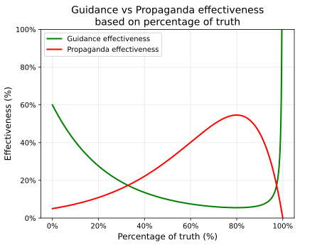
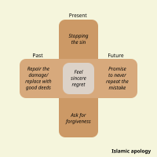
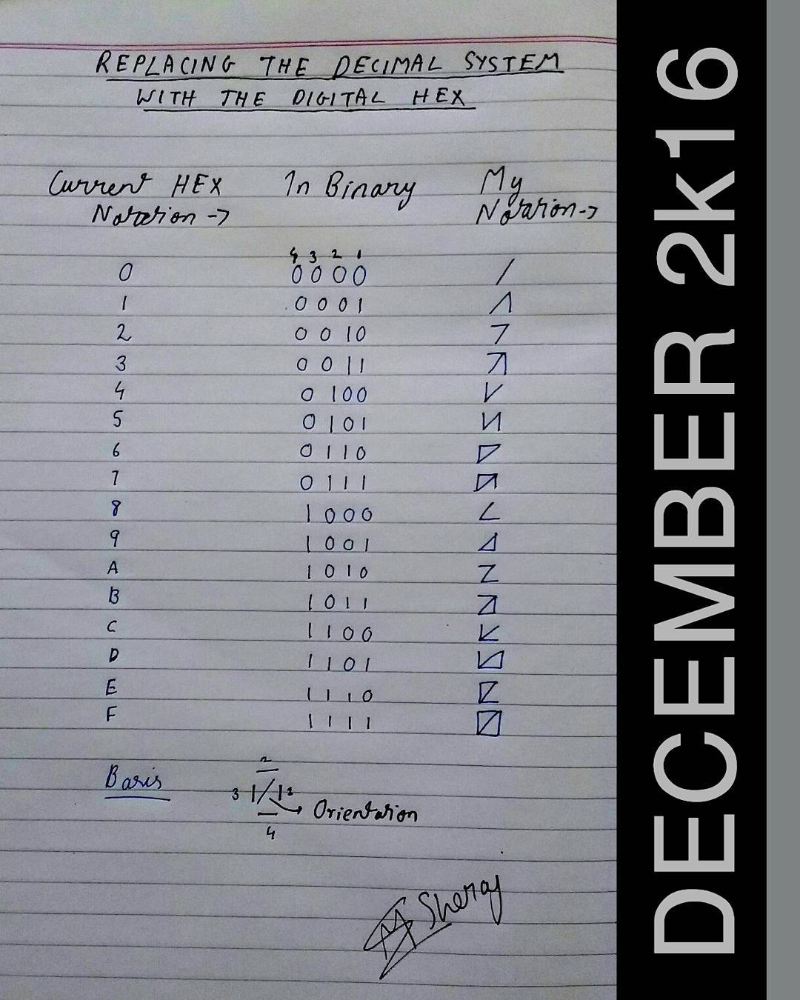

Generating energy via the second law of thermodynamics for non homogeneous materials.

LLM Art
- The artist or
creative
person is often the
person outside the structure - and builds a structure of his/her own.

How to
learn Hindi numbering instantly if you know 0 to 9 and then multiples of 10. The underlined words
are an exception to the rule. The number 11 is a seperate exception. The 'ah' at the end of numbers
11 to 18 indicates 10 to be said as dusah.

SVG Art
(infinite resolution)
Incompetance is the archetypal evil. If we all were perfect there would be
no evil. The most effective propaganda is not lies but telling only one side of the story. Adolf
Hitler has written in Mein Kampf "It is the task of propaganda not, for instance, to assay the
various causes, but to emphasize exclusively the one cause it represents.". Unlike the idea
of "Tell
the truth—or, at least, don't lie", in Islam hiding the truth is also lying "And do not
mix the
truth with falsehood or conceal the truth while you know [it]." -
Surah
Al-Baqarah (2:42) (Sahih International). Islam asks for honesty (which I personally feel is also
much less headache
to deal with for both the sender and the receiver).
For Guidance we must remember "Indeed, [O Muhammad], you do not guide whom you like, but Allah
guides whom He wills. And He is most knowing of the [rightly] guided." - Surah
Al-Qasas (28:56) (Sahih International).

Beware
of simplified random quotes
We have the popular concept of “tit for tat”, “an eye for an eye”, or the golden rule
of “treat others like you would like to be treated”.
However Islam teaches us to 'repel evil with good' which means being patient, forbearing,
forgiving, and even generous to evildoers. The fruit of this path is that the good character of the
believers softens the hearts of the enemies and, potentially, brings them closer to Islam, or at
least neutralizes their hostility toward Muslims, whereas habitually retaliating with “an eye for an
eye,” despite its permissibility as a concession, does not achieve the lofty objects pleasing to
Allah. The purpose of Islam is to win hearts and minds to the truth, not to damn people to Hellfire.
“And not equal are the good deed and the bad. Repel [evil] by that [deed] which is better; and
thereupon, the one whom between you and him is enmity [will become] as though he was a devoted
friend.” - Surah Fussilat Ayat 34 (Sahih International)

SVG Art
(infinite resolution)
Islamic Apology. Feel regret "And those who, when they commit an immorality or wrong themselves
[by transgression], remember Allāh and seek forgiveness for their sins - and who can forgive
sins except Allāh? - and [who] do not persist in what they have done while they know." -
Surah Al-Imran Ayat 135 (Sahih International). Allah gives hope to those who sincerely change their
lives "Except for those who repent, believe and do righteous work. For them Allāh will replace
their
evil deeds with good. And ever is Allāh Forgiving and Merciful." - Surah Furqan Ayat 70
(Sahih
International). However we cannot do bad deeds and rely on prayer alone to save us "Abu Huraira
(RA) reported Allah's Apostle ﷺ as saying, do you know
who is poor? They (the Companions) said, a poor man amongst us is one who has neither dirham
with him nor wealth. The Prophet ﷺ said, the poor of my Umma would be he
who would come on the Day of Resurrection with prayers and fasts and Zakat but since he hurled
abuses upon others, brought calumny against others and unlawfully consumed the wealth of others
and shed the blood of others and beat others, and his virtues would be credited to the account
of one (who suffered at his hand). And if his good deeds fall short to clear the account, then
his sins would be entered in (his account) and he would be thrown in the Hellfire." - Sahih
Muslim 2581. A person should never believe that their sins are too great for Allah to forgive
“Say, "O My servants who have transgressed against themselves [by sinning], do not despair of the
mercy of Allah . Indeed, Allah forgives all sins. Indeed, it is He who is the Forgiving, the
Merciful."” - Surah Az-Zumar Ayat 53 (Sahih International).
